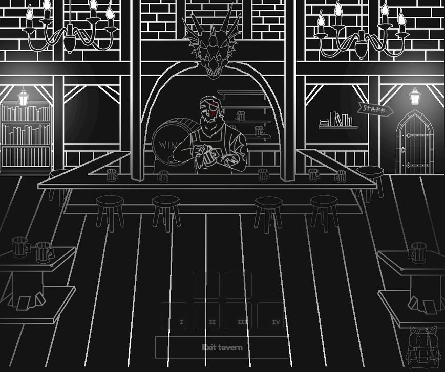
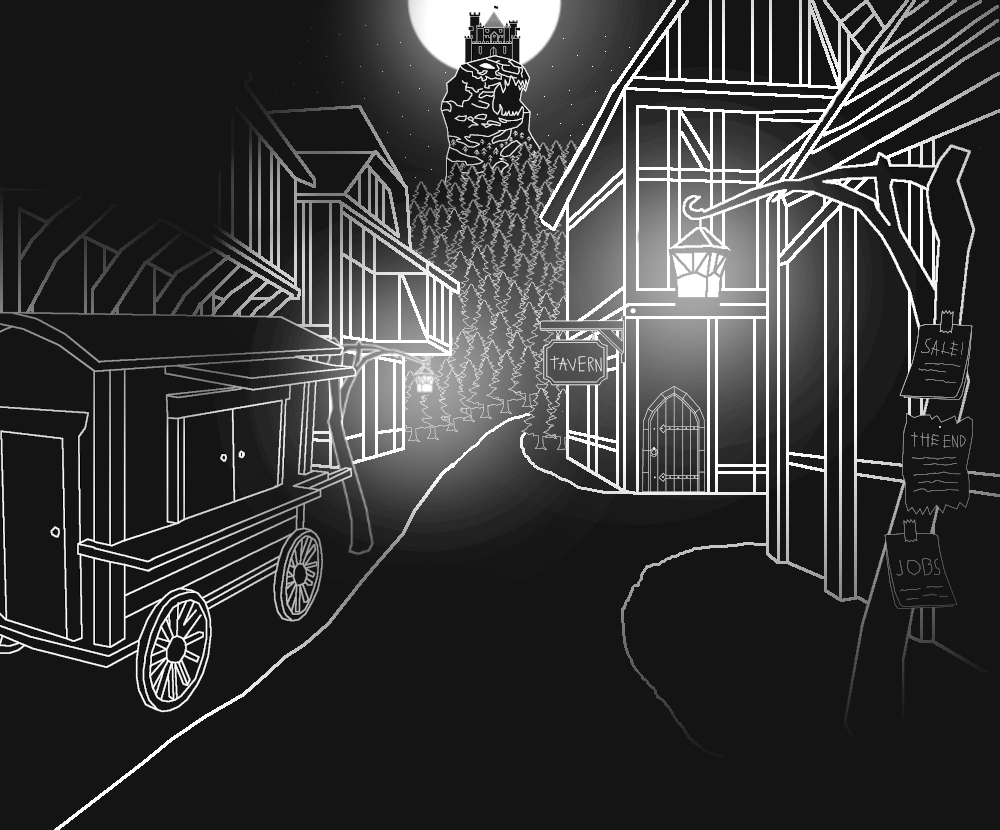
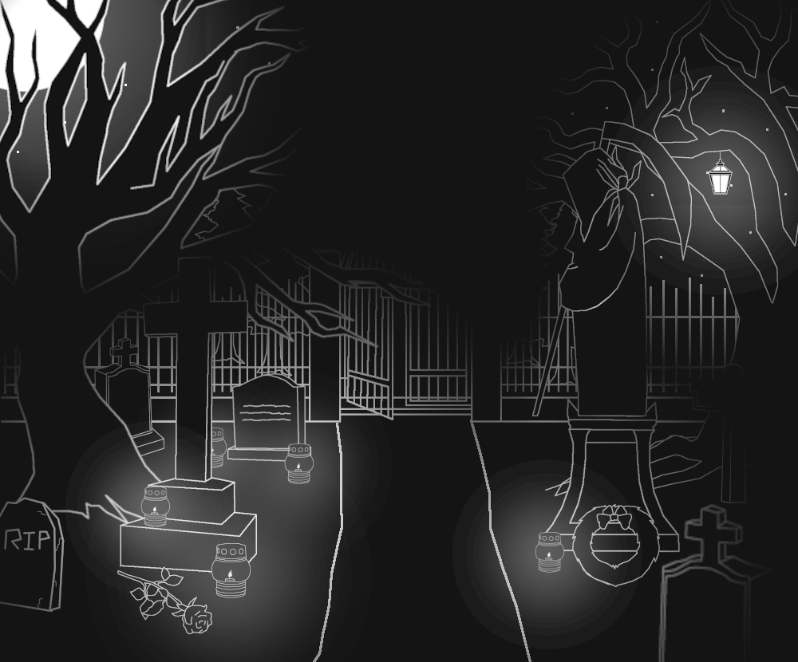
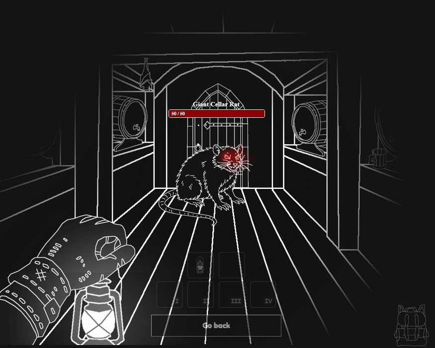

Browser based game
No downloads, no unnecessary fluff, native HTML, CSS and javascript. Visit the site and dive right in!
A mysterious realm consumed by eternal darkness...
Everdark is an upcoming passion project: a point-and-click horror adventure game inspired by the famous Curse of Strahd D&D campaign. Built as an attempt to revive the charm and atmosphere of classic browser-based point-and-click horror games, Everdark combines old-school exploration with a dark, story-driven world.
Take a lantern and explore the secrets that lie within. Fight your way through strange enemies, solve puzzles, and complete quests as you slowly uncover the mysteries of a cursed land ruled by darkness.
These are the main features and mechanics that make the game what it is:
No downloads, no unnecessary fluff, native HTML, CSS and javascript. Visit the site and dive right in!
A point-and-click gameplay loop combined with the browser based system designed to capture old flash game horror vibes and to revive this style of gameplay
No cursor wiggling to find hidden items, no confusing tasks. Everything is designed to be intuitive and engaging to keep the player involved at all times
A unique delay-based combat system inspired by Nodiatis, where timing, weapon choice, and inventory management directly affect the outcome of battles.
Item stats, passive and active flashy abilities and even flashier weapons and armor, from basic everyday tools used as weapons, to supernatural artifacts.
In a world ruled by darkness, light is key for survival. Manage your light sources wisely to navigate through the shadows.
This world relies on immersive visuals and sound design to make the player feel uneasy and immersed, headphones are highly recommended.
Special enemies with unique mechanics and different ways to avoid them, inspired by Spooky's Jumpscare Mansion.
Everdark has an interesting and chaotic storyline, gossip, lies, different realms, unnatural entities and world-threatening events
A few teaser images of some locations the game world has to offer:





Everdark is currently in active development and there is no final release date yet. The goal is to release it once the
core gameplay, progression systems, and overall polish hit the quality level the project deserves.
The current planned release date is 2027 Halloween
If you wish to keep track of development, we have a dev log page where i log every changes made to the game!
Open Dev Log